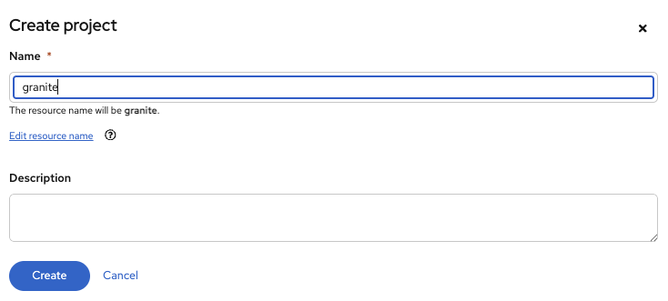
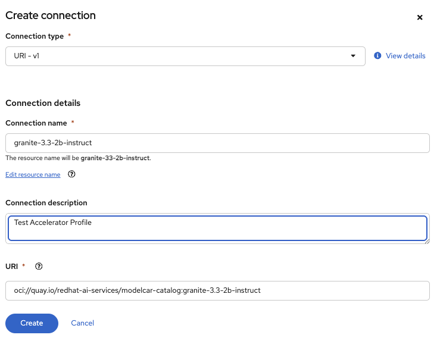
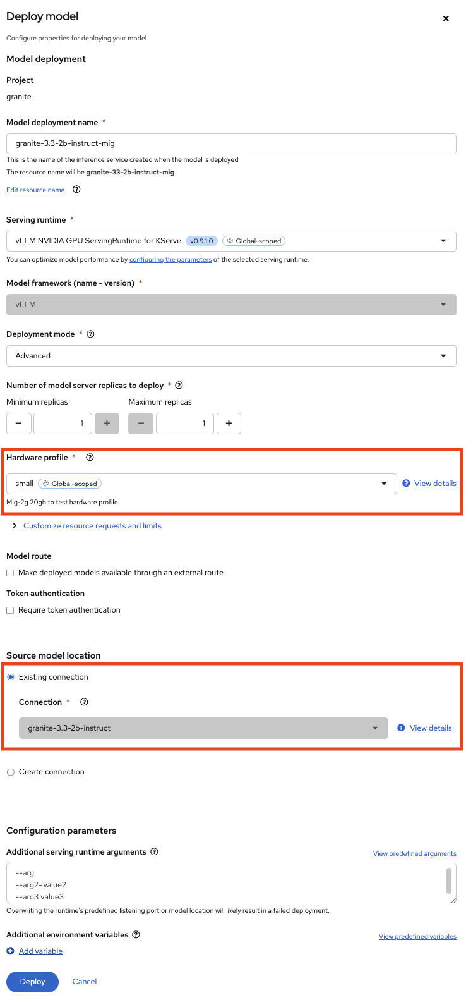

Lab Guide: Configuring NVIDIA GPU Time-Slicing on OpenShift
This lab guide uses the NVIDIA GPU Operator on OpenShift and demonstrates the configuration needed to enable GPU time-slicing. This approach improves GPU utilization by allowing multiple workloads to share a single GPU.
The final configuration will use time-slicing because the NVIDIA A10G Tensor Core GPU, which is part of the provisioned Amazon EC2 G5 Instance, does not support Multi-Instance GPU (MIG). However, as MIG plays a crucial role in production environments, this guide also includes a theoretical section explaining how a MIG configuration would be implemented.
In this lab, each worker node will be provisioned with a single NVIDIA A10G Tensor Core GPU. The created time slices will then be used to simulate a scenario of fair resource sharing with Kueue.
|
Time-Slicing vs. MIG for Model Serving
NVIDIA time-slicing is a valuable strategy for serving models when you need to maximize GPU utilization on non-MIG capable hardware, have mixed or bursty workloads, and prioritize cost efficiency in a trusted environment. For newer GPUs and scenarios demanding strong performance isolation and predictable resource allocation, NVIDIA MIG is the preferred choice. |
1. Introduction
Installing the NVIDIA GPU Operator on OpenShift is a prerequisite for utilizing NVIDIA GPUs. The operator’s installation relies on the Node Feature Discovery (NFD) Operator, which must be installed first. The NFD Operator inspects node hardware and applies labels that the NVIDIA GPU Operator uses to identify and configure GPU-enabled nodes correctly.
2. Prerequisites
-
OpenShift AI Operator: Ensure the OpenShift AI Operator is installed on your cluster.
-
GPU Worker Node: You need at least one worker node with an NVIDIA A10G GPU. On AWS, a
g5.2xlargeinstance is suitable. -
GPU Node Taint: The GPU node must be tainted to ensure only GPU-tolerant workloads are scheduled on it.
|
To check the current taints on your GPU nodes, use the following commands: This taint was likely applied during the bootstrap process in the previous lab. If you need to re-apply it, use the following command: |
2.1. Node Feature Discovery (NFD) Operator
OpenShift (and Kubernetes in general) is designed to be hardware-agnostic. It doesn’t inherently know what specific hardware components (like NVIDIA GPUs) are present on its nodes. The NFD Operator fills this gap.
-
Standardized labeling: Once NFD discovers a specific hardware feature, like an NVIDIA GPU, it applies a standardized Kubernetes label to that node. For NVIDIA GPUs, the most common label is
feature.node.kubernetes.io/pci-10de.present=true, where:-
feature.node.kubernetes.io/- a standard prefix for NFD-generated labels. -
pci-10de- the PCI vendor ID for NVIDIA Corporation ("10de"). This uniquely identifies NVIDIA hardware. -
.present=true- indicates that a device with this PCI ID is present on the node.
-
2.2. NVIDIA GPU Operator
The NVIDIA GPU Operator is designed to be intelligent and efficient. It doesn’t want to deploy its heavy components (like the NVIDIA driver daemonset, container toolkit, device plugin) on every node in your cluster, especially if most of your nodes don’t have GPUs.
-
The GPU Operator uses these NFD labels as a selector. It deploys its components only to nodes that have the
feature.node.kubernetes.io/pci-10de.present=truelabel. This ensures that resources are not wasted on non-GPU nodes. -
Beyond the GPU Operator’s internal logic, these labels are fundamental for Kubernetes' scheduler. When a user defines a Pod that requires GPU resources (e.g., by specifying
resources.limits.nvidia.com/gpu: 1), the Kubernetes scheduler looks for nodes that have the necessary GPU capacity. The labels provided by NFD are crucial for this matching process. Without them, Kubernetes wouldn’t know which nodes are "GPU-enabled."
As stated in the official [documentation]:
In addition, the worker nodes can host one or more GPUs, but they must be of the same type. For example, a node can have two NVIDIA A100 GPUs, but a node with one A100 GPU and one T4 GPU is not supported. The NVIDIA Device Plugin for Kubernetes does not support mixing different GPU models on the same node.
OpenShift Documentation, Version 4.19
Multiple Nodes with Different GPU Types: This is the most common and recommended approach. You dedicate individual worker nodes to a specific GPU model. For example:
-
Node 1: Two NVIDIA A100 GPUs
-
Node 2: Four NVIDIA T4 GPUs
-
Node 3: No GPUs (CPU-only)
Your cluster can still have a mix of these node types. The maximum number of GPUs per Node is limited by the number of PCI slots within the Mainboard of the Node.
|
DO NOT DEPLOY THE NVIDIA NETWORK OPERATOR IN THIS LAB! NVIDIA Network Operator (For Information Only)NVIDIA Network OperatorThe NVIDIA Network Operator for OpenShift is a specialized Kubernetes Operator designed to simplify the deployment and management of high-performance networking capabilities provided by NVIDIA (formerly Mellanox) in Red Hat OpenShift clusters. It’s particularly crucial for workloads that demand high-throughput and low-latency communication, such as AI/ML, HPC (High-Performance Computing), and certain telco applications (like vRAN). The NVIDIA Network Operator works in close conjunction with the NVIDIA GPU Operator. While the GPU Operator focuses on provisioning and managing NVIDIA GPUs (drivers, container runtime, device plugins), the Network Operator handles the networking components that enable:
|
3. Verify NVIDIA GPU Operator and Node Status
First, verify that the GPU Operator is running and that the GPUs are recognized.
-
Get the name of a
nvidia-driver-daemonsetpod.oc get pod -o wide -l openshift.driver-toolkit=true -n nvidia-gpu-operatorExample OutputNAME READY STATUS RESTARTS AGE IP NODE NOMINATED NODE nvidia-driver-daemonset-abcdef-12345 2/2 Running 0 19m 10.130.0.9 ip-10-0-61-182.us-east-2.compute.internal <none> nvidia-driver-daemonset-abcdef-67890 2/2 Running 0 19m 10.129.0.14 ip-10-0-45-75.us-east-2.compute.internal <none> -
Execute the
nvidia-smicommand inside one of the pods to inspect the GPU.oc exec -it -n nvidia-gpu-operator <name-of-driver-daemonset-pod> -- nvidia-smiExample OutputThe date and driver versions in this output are examples and may differ from your environment.
+-----------------------------------------------------------------------------------------+ | NVIDIA-SMI 580.82.07 Driver Version: 580.82.07 CUDA Version: 13.0 | +-----------------------------------------+------------------------+----------------------+ | GPU Name Persistence-M | Bus-Id Disp.A | Volatile Uncorr. ECC | | Fan Temp Perf Pwr:Usage/Cap | Memory-Usage | GPU-Util Compute M. | | | | MIG M. | |=========================================+========================+======================| | 0 NVIDIA A10G On | 00000000:00:1E.0 Off | 0 | | 0% 26C P8 24W / 300W | 0MiB / 23028MiB | 0% Default | | | | N/A | +-----------------------------------------+------------------------+----------------------+
Since there are two GPU-enabled nodes, their configurations could be different. It’s worth checking both if you encounter issues.
|
Short version: |
4. Configure the NVIDIA GPU Operator
| The GPUs available in this lab are NVIDIA A10G, which do not support MIG. Therefore, we will use time-slicing. |
4.1. Theoretical: MIG Configuration Example
| This section is for informational purposes only to show how MIG would be configured in a production environment with compatible hardware (e.g., A100 or H100). Do not apply these configurations in this lab. |
NVIDIA’s Multi-Instance GPU (MIG) slicing is a powerful feature that allows you to partition a single compatible NVIDIA GPU (such as the A100 or H100) into several smaller, fully isolated, and independent GPU instances. This offers significant advantages, especially in multi-tenant or diverse workload environments. The Custom MIG Configuration During Installation documentation explains further configuration possibilities.
-
Hardware-Level Isolation and Security
-
Predictable Performance and Quality of Service (QoS)
-
Maximized GPU Utilization and Cost Efficiency
-
Fine-Grained Resource Allocation and Flexibility
-
Simplified Management in Containerized Environments (e.g., Kubernetes)
4.1.1. ConfigMap for MIG
Create a ConfigMap to specify the MIG configuration:
-
Create a
yamlfile to define how you want to slice your GPUs. -
This
ConfigMap⚡ must be namedcustom-mig-configand reside in thenvidia-gpu-operatornamespace ⚡. -
You can define the mig devices in a custom config. Always make sure to use a supported configuration.
apiVersion: v1
kind: ConfigMap
metadata:
name: custom-mig-config
data:
config.yaml: |
version: v1
mig-configs:
all-disabled:
- devices: all
mig-enabled: false
custom-mig:
- devices: all # it's possible to target single GPU's here
mig-enabled: true
mig-devices:
"1g.5gb": 2
"2g.10gb": 1
"3g.20gb": 14.1.2. Patch for ClusterPolicy
-
You need to modify the
gpu-cluster-policywithin thenvidia-gpu-operatornamespace to point to yourcustom-mig-config. -
This is typically accomplished with a Kustomize patch.
-
If the custom configuration specifies more than one instance profile, set the strategy to
mixed:oc patch clusterpolicies.nvidia.com/cluster-policy \ --type='json' \ -p='[{"op":"replace", "path":"/spec/mig/strategy", "value":"mixed"}]' -
Patch the cluster policy so MIG Manager uses the custom config map:
oc patch clusterpolicies.nvidia.com/cluster-policy \ --type='json' \ -p='[{"op":"replace", "path":"/spec/migManager/config/name", "value":"custom-mig-config"}]' -
Label the nodes with the profile to configure:
oc label nodes <node-name> nvidia.com/mig.config=custom-mig --overwrite
-
4.2. Practical: Time-Slicing Configuration
| This is the section you will actively configure for this lab. |
NVIDIA’s time slicing is a powerful feature that allows you to share a single GPU among multiple processes, where each process gets a slice of time to access the GPU’s resources.
This is particularly useful for running many lightweight, concurrent workloads on a single GPU. It improves utilization and throughput without requiring multiple GPUs or a complex resource management system.
-
Shared GPU Resources: Multiple workloads share the same physical GPU, increasing utilization and efficiency.
-
Simpler Configuration: Compared to MIG, time slicing is easier to set up and manage, as it doesn’t require partitioning the GPU at the hardware level.
-
Best for Lightweight Workloads: Ideal for running many small AI inference tasks or other GPU-accelerated workloads that don’t saturate a full GPU.
-
Dynamic Resource Sharing: The GPU scheduler dynamically allocates GPU time to each process, ensuring fair access.
4.2.1. ConfigMap for Time Slicing
Create a YAML file to define how you want to slice your GPUs.
This ConfigMap can be named anything, but it must reside in the nvidia-gpu-operator namespace.
In this configuration, we need to define the number of replicas (slices) for each GPU model.
cat <<EOF | oc apply -f -
apiVersion: v1
kind: ConfigMap
metadata:
name: device-plugin-config
namespace: nvidia-gpu-operator
data:
time-sliced: |-
version: v1
sharing:
timeSlicing:
resources:
- name: nvidia.com/gpu
replicas: 8
EOF4.2.2. Patch for ClusterPolicy
We need to modify the gpu-cluster-policy within the nvidia-gpu-operator namespace:
-
to enable GPU Feature Discovery (component of the NVIDIA GPU Operator whose primary job is to discover the hardware features of the GPUs on a node and expose them as Kubernetes node labels)
-
to point to the
device-plugin-config. This tells the NVIDIA Device Plugin to use the configuration you’ve defined. Patch the ClusterPolicy so the Device Plugin uses the custom config map:
oc patch clusterpolicy gpu-cluster-policy \
-n nvidia-gpu-operator --type json \
-p '[{"op": "replace", "path": "/spec/gfd/enabled", "value": true}]'oc patch clusterpolicy gpu-cluster-policy \
-n nvidia-gpu-operator --type merge \
-p '{"spec": {"devicePlugin": {"config": {"name": "device-plugin-config"}}}}'4.2.3. Label the nodes
After patching the ClusterPolicy, you need to label the nodes that have the GPUs you want to time-slice. The GPU Operator will automatically detect this label and apply the new configuration.
oc label --overwrite node \
--selector=nvidia.com/gpu.product=NVIDIA-A10G-SHARED \
nvidia.com/device-plugin.config=time-sliced|
Label Selector for Nodes
The selector value |
4.2.4. Verify Time Slicing was enabled successfully
oc get node --selector=nvidia.com/gpu.product=NVIDIA-A10G-SHARED -o json | jq '.items[0].status.capacity'{
"cpu": "8",
"ephemeral-storage": "104266732Ki",
"hugepages-1Gi": "0",
"hugepages-2Mi": "0",
"memory": "32499872Ki",
"nvidia.com/gpu": "8",
"pods": "250"
}oc get node --selector=nvidia.com/gpu.product=NVIDIA-A10G-SHARED -o json \
| jq '.items[0].metadata.labels' | grep nvidia "nvidia.com/cuda.driver-version.full": "570.148.08",
"nvidia.com/cuda.driver-version.major": "570",
"nvidia.com/cuda.driver-version.minor": "148",
"nvidia.com/cuda.driver-version.revision": "08",
"nvidia.com/cuda.driver.major": "570",
"nvidia.com/cuda.driver.minor": "148",
"nvidia.com/cuda.driver.rev": "08",
"nvidia.com/cuda.runtime-version.full": "12.8",
"nvidia.com/cuda.runtime-version.major": "12",
"nvidia.com/cuda.runtime-version.minor": "8",
"nvidia.com/cuda.runtime.major": "12",
"nvidia.com/cuda.runtime.minor": "8",
"nvidia.com/device-plugin.config": "time-sliced",
"nvidia.com/gfd.timestamp": "1757166356",
"nvidia.com/gpu-driver-upgrade-state": "upgrade-done",
"nvidia.com/gpu.compute.major": "8",
"nvidia.com/gpu.compute.minor": "6",
"nvidia.com/gpu.count": "1",
"nvidia.com/gpu.deploy.container-toolkit": "true",
"nvidia.com/gpu.deploy.dcgm": "true",
"nvidia.com/gpu.deploy.dcgm-exporter": "true",
"nvidia.com/gpu.deploy.device-plugin": "true",
"nvidia.com/gpu.deploy.driver": "true",
"nvidia.com/gpu.deploy.gpu-feature-discovery": "true",
"nvidia.com/gpu.deploy.node-status-exporter": "true",
"nvidia.com/gpu.deploy.nvsm": "",
"nvidia.com/gpu.deploy.operator-validator": "true",
"nvidia.com/gpu.family": "ampere",
"nvidia.com/gpu.machine": "g5.2xlarge",
"nvidia.com/gpu.memory": "23028",
"nvidia.com/gpu.mode": "compute",
"nvidia.com/gpu.present": "true",
"nvidia.com/gpu.product": "NVIDIA-A10G-SHARED",
"nvidia.com/gpu.replicas": "8",
"nvidia.com/gpu.sharing-strategy": "time-slicing",
"nvidia.com/mig.capable": "false",
"nvidia.com/mig.strategy": "single",
"nvidia.com/mps.capable": "false",
"nvidia.com/vgpu.present": "false",As expected we see the label declaring 8 replicas, as defined in our configuration.
5. Configure Hardware Profile in OpenShift AI
|
Timeslicing due to hardware resource constraints
The configuration can be done even without MIG configured within the GPU Operator. But the workload will not be able to be scheduled by the OpenShift scheduler and the Pod will stay pending afterwards. |
MIG technology enables a single physical GPU to be logically partitioned into multiple, isolated GPU instances, thereby maximizing hardware utilization and facilitating multi-tenancy on expensive accelerator resources. These granular GPU configurations, along with other specialized hardware specifications, are then encapsulated within Accelerator Profiles (or the more advanced Hardware Profiles) in OpenShift AI. These profiles serve as administrative definitions that abstract complex resource configurations, allowing data scientists to easily request and consume appropriate hardware for their workbenches, model serving, and data pipelines without needing deep Kubernetes expertise.
Complementing this, Taints and Tolerations are fundamental Kubernetes primitives that ensure intelligent workload scheduling. GPU-enabled nodes can be "tainted" to prevent general workloads from being scheduled on them. Correspondingly, Accelerator/Hardware Profiles automatically apply "tolerations" to AI/ML workloads, allowing them to be scheduled exclusively on nodes possessing the required specialized hardware.
5.1. Create Hardware Profiles in RHOAI
|
Timeslicing due to hardware resource constraints
This can be done even without MIG enabled. But the created Pods will not be able to be scheduled! |
-
Hardware Profiles for each MIG Type have to be created beforehand.
-
In case Taints are configured, add the Tolerations so that the GPU-enabled pods can be immune to theme.
-
Use the resource label and display name
nvidia.com/mig-2g.20gbinside the section Resource requests and limits.
-
Click on
Create Hardware Profile.
|
Accelerator Profiles are deprecated
|
Thanks to the Cloud Native approach of RHOAI, the profile can be created as yaml file as well to better integrate it into a GitOps approach:
apiVersion: dashboard.opendatahub.io/v1alpha1
kind: HardwareProfile
metadata:
annotations:
opendatahub.io/dashboard-feature-visibility: '["model-serving"]' # only visible in model serving
name: small
namespace: redhat-ods-applications
spec:
description: Mig-2g.20gb to test hardware profile
displayName: small
enabled: true
identifiers:
- defaultCount: 2
displayName: CPU
identifier: cpu
maxCount: 4
minCount: 1
resourceType: CPU
- defaultCount: 4Gi
displayName: Memory
identifier: memory
maxCount: 8Gi
minCount: 2Gi
resourceType: Memory
- defaultCount: 1
displayName: nvidia.com/mig-2g.20gb
identifier: nvidia.com/mig-2g.20gb
maxCount: 2
minCount: 1
resourceType: Accelerator
nodeSelector: {}
tolerations: []|
The Blog article Build and deploy a ModelCar container in OpenShift AI demonstrates how to build a ModelCar Container and discusses pros and cons about the ModelCar Approach. |
6. Verify the Configuration
6.1. Create Models
In this section two models will be deployed. One will use the nvidia.com/gpu accelerator, whike the other model will use the nvidia.com/mig-2g.20gb accelerator.
-
Create a new Project in OpenShift AI:
 -
Create a
Connectionwithin thegraniteProject: -
Deploy a Model within the
graniteproject (go toModels→Single-model serving platform→Deploy Model), using the new HardwareProfile created beforehandsmall:Pod will stayPendingforeverThe Hardware Profiles can be created even when the resources are not present in the Cluster. The OpenShift scheduler will not be able to schedule the Pod!

6.2. Inspect the resource requests
The Model granite-3.3-2b-instruct should work using the nvidia-com/gpu idientifier whereas the Model granite-3.3-2b-instruct-mig will stay pending.
|
Timeslicing due to hardware resource constraints
Created resources will contain the resource |
While inspecting the resource (which will be created RHOAI while serving a Model) the spec.containers[0].resources.requests will use the resource nvidia.com/mig-2g.20gb which is not present in the cluster.
oc get pods -n granite -o yaml |grep nvidia -B 3The output will look like the following:
limits:
cpu: "2"
memory: 4Gi
nvidia.com/mig-2g.20gb: "1"
requests:
cpu: "2"
memory: 4Gi
nvidia.com/mig-2g.20gb: "1"
--
conditions:
- lastProbeTime: null
lastTransitionTime: "2025-09-19T14:59:18Z"
message: '0/3 nodes are available: 1 Insufficient cpu, 1 Insufficient nvidia.com/mig-2g.20gb,
2 node(s) had untolerated taint {nvidia.com/gpu: Exists}. preemption: 0/3As explained earlier, when applying the MIG configuratiuon within a Cluster which does not have an accelerator type (i.e. nvidia.com/mig-2g.20gb) the scheduler will not be able to be scheduled, therefore affected pods will stay in Pending state.
oc delete project graniteReferences
-
[documentation] Red Hat. OpenShift Documentation. Version 4.19. Available from: https://docs.redhat.com/en/documentation/openshift_container_platform/4.19/html/hardware_accelerators/nvidia-gpu-architecture#nvidia-gpu-bare-metal_nvidia-gpu-architecture#:~:text=In%20addition%2C%20the,the%20same%20node
-
[documentation] Red Hat. OpenShift AI Documentation. Version 2.23. Available from: https://docs.redhat.com/en/documentation/red_hat_openshift_ai_self-managed/2.23/html/working_with_accelerators/working-with-hardware-profiles_accelerators